Last updated: 2022-05-23
Checks: 7 0
Knit directory: paed-cf-cite-seq/
This reproducible R Markdown analysis was created with workflowr (version 1.7.0). The Checks tab describes the reproducibility checks that were applied when the results were created. The Past versions tab lists the development history.
Great! Since the R Markdown file has been committed to the Git repository, you know the exact version of the code that produced these results.
Great job! The global environment was empty. Objects defined in the global environment can affect the analysis in your R Markdown file in unknown ways. For reproduciblity it’s best to always run the code in an empty environment.
The command set.seed(20210524) was run prior to running the code in the R Markdown file. Setting a seed ensures that any results that rely on randomness, e.g. subsampling or permutations, are reproducible.
Great job! Recording the operating system, R version, and package versions is critical for reproducibility.
Nice! There were no cached chunks for this analysis, so you can be confident that you successfully produced the results during this run.
Great job! Using relative paths to the files within your workflowr project makes it easier to run your code on other machines.
Great! You are using Git for version control. Tracking code development and connecting the code version to the results is critical for reproducibility.
The results in this page were generated with repository version 01ecaf7. See the Past versions tab to see a history of the changes made to the R Markdown and HTML files.
Note that you need to be careful to ensure that all relevant files for the analysis have been committed to Git prior to generating the results (you can use wflow_publish or wflow_git_commit). workflowr only checks the R Markdown file, but you know if there are other scripts or data files that it depends on. Below is the status of the Git repository when the results were generated:
Ignored files:
Ignored: .Rhistory
Ignored: .Rproj.user/
Ignored: data/CellRanger/
Ignored: data/emptyDrops/bin/
Ignored: renv/library/
Ignored: renv/staging/
Untracked files:
Untracked: Rplots.pdf
Untracked: analysis/03_COMBO.annotation_markers.Rmd
Untracked: analysis/03_COMBO.protein_analysis.Rmd
Untracked: analysis/04_COMBO.compare_annotations.Rmd
Untracked: analysis/04_COMBO_expression_analysis.Rmd
Untracked: analysis/scGateDB/
Untracked: code/03_C133_Neeland-dropletutils.R
Untracked: code/03_COMBO.proteins_geneBasis.R
Untracked: code/deidentify.R
Untracked: data/190930_A00152_0150_BHTYCMDSXX/
Untracked: data/CITE-seq_pilot_proportions_final.csv
Untracked: data/Flow_data_CITEseq_2-8.csv
Untracked: data/GSE127465_RAW/
Untracked: data/GSE130148_barcodes_cell_types.txt
Untracked: data/GSE130148_raw_counts.RData
Untracked: data/Macrophage_subcluster_annotation_110322.csv
Untracked: data/Other_subcluster_annotation_110322.csv
Untracked: data/Proteins_T-NK_22.04.22.csv
Untracked: data/Proteins_broad_22.04.22.csv
Untracked: data/Proteins_macs_22.04.22.csv
Untracked: data/Proteins_other_22.04.22.csv
Untracked: data/T-NK_subcluster_annotation_110322.csv
Untracked: data/T-NK_subcluster_proteins.csv
Untracked: data/T-NK_subcluster_proteins_110322.csv
Untracked: data/T-NK_subclusters_cytokines.csv
Untracked: data/T-NK_subclusters_markergenes_110322.csv
Untracked: data/TNK_subcluster_annotation_09.04.22.csv
Untracked: data/all_azimuth_cluster_cytokines.csv
Untracked: data/all_azimuth_clusters_proteins.csv
Untracked: data/cell_type_category_rna_Granulocytes_Cell.tsv
Untracked: data/consolidated_markers.rds
Untracked: data/gb-genes-50.rds
Untracked: data/genome1K.phase3.SNP_AF5e4.chr1toX.hg38.vcf.gz
Untracked: data/macrophage_subcluster_annotation_09.04.22.csv
Untracked: data/macrophage_subcluster_cytokines.csv
Untracked: data/macrophage_subcluster_markergenes_110322.csv
Untracked: data/macrophage_subcluster_markergenes_160322.csv
Untracked: data/macrophage_subcluster_proteins.csv
Untracked: data/macrophage_subcluster_proteins_110322.csv
Untracked: data/nCoV.all.cell.annotation.meta.txt
Untracked: data/nCoV.rds
Untracked: data/neutrophil.tsv
Untracked: data/other_subcluster_proteins.csv
Untracked: data/other_subcluster_proteins_110322.csv
Untracked: data/other_subclusters_cytokines.csv
Untracked: data/other_subclusters_markergenes_110322.csv
Untracked: data/others_subcluster_annotation_09.04.22.csv
Untracked: data/proteins_ranked.rds
Untracked: data/sample_sheets/Hashtag_Feature_Ref_With_Clin.csv
Untracked: data/sample_sheets/Sample_information.csv
Untracked: data/sample_sheets/TotalSeq_A_Human_Universal_Cocktail_Proteins of interest_29.09.21.csv
Untracked: data/sample_sheets/TotalSeq_A_Human_Universal_Cocktail_Proteins_of_interest_28.06.21.csv
Untracked: output/ADT-counts.csv
Untracked: output/C133_Neeland.azimuth.individual_cell_type_proportions.csv
Untracked: output/C133_Neeland.azimuth.phenotype_information.csv
Untracked: output/C133_Neeland.individual_cell_type_proportions.csv
Untracked: output/C133_Neeland.phenotype_information.csv
Untracked: output/DEGs-New/
Untracked: output/DEGs/
Untracked: output/glimma-plots/js/labelled-singlets-md-plot.js
Untracked: output/glimma-plots/js/qc-md-plot_03_C133_Neeland.js
Untracked: output/glimma-plots/js/qc-md-plot_C133_Neeland.js
Untracked: output/glimma-plots/js/qc-md-plot_CF-BAL-Pilot.js
Untracked: output/glimma-plots/labelled-singlets-md-plot.html
Untracked: output/glimma-plots/qc-md-plot_03_C133_Neeland.html
Untracked: output/glimma-plots/qc-md-plot_C133_Neeland.html
Untracked: output/glimma-plots/qc-md-plot_CF-BAL-Pilot.html
Untracked: output/marker-analysis-mod/
Untracked: output/marker-analysis/
Untracked: output/metadata.csv
Untracked: output/protein_labels.pdf
Untracked: scGateDB/
Untracked: wflow_background.R
Unstaged changes:
Modified: analysis/01_C133_Neeland.azimuth.expression_differences.Rmd
Modified: analysis/03_COMBO.cluster_macrophages.Rmd
Modified: analysis/03_COMBO.compare_annotations.Rmd
Modified: analysis/03_COMBO.proportion_analysis.Rmd
Modified: analysis/04_COMBO.proportion_analysis.Rmd
Modified: analysis/index.Rmd
Modified: code/utility.R
Modified: data/SCEs/C133_Neeland.CellRanger.SCE.rds
Modified: data/SCEs/C133_Neeland.demultiplexed.SCE.rds
Deleted: data/SCEs/C133_Neeland.preprocessed.SCE.hto.rds
Deleted: data/SCEs/C133_Neeland.preprocessed.SCE_hto.rds
Deleted: data/SCEs/C133_Neeland.preprocessed.SCE_snp.rds
Modified: data/sample_sheets/TotalSeq-A_Universal_Cocktail_v1.0.csv
Modified: data/vireo/C133_1/GT_donors.vireo.vcf.gz
Modified: data/vireo/C133_1/_log.txt
Modified: data/vireo/C133_1/donor_ids.tsv
Modified: data/vireo/C133_1/fig_GT_distance_estimated.pdf
Modified: data/vireo/C133_1/prob_doublet.tsv.gz
Modified: data/vireo/C133_1/prob_singlet.tsv.gz
Modified: data/vireo/C133_1/summary.tsv
Modified: data/vireo/C133_2/GT_donors.vireo.vcf.gz
Modified: data/vireo/C133_2/_log.txt
Modified: data/vireo/C133_2/donor_ids.tsv
Modified: data/vireo/C133_2/fig_GT_distance_estimated.pdf
Modified: data/vireo/C133_2/prob_doublet.tsv.gz
Modified: data/vireo/C133_2/prob_singlet.tsv.gz
Modified: data/vireo/C133_2/summary.tsv
Modified: output/glimma-plots/js/qc-md-plot.js
Modified: output/glimma-plots/js/stripped-nuclei-md-plot.js
Modified: renv.lock
Modified: renv/.gitignore
Modified: renv/activate.R
Modified: renv/settings.dcf
Note that any generated files, e.g. HTML, png, CSS, etc., are not included in this status report because it is ok for generated content to have uncommitted changes.
These are the previous versions of the repository in which changes were made to the R Markdown (analysis/04_COMBO.postprocess_tcells.Rmd) and HTML (docs/04_COMBO.postprocess_tcells.html) files. If you’ve configured a remote Git repository (see ?wflow_git_remote), click on the hyperlinks in the table below to view the files as they were in that past version.
| File | Version | Author | Date | Message |
|---|---|---|---|---|
| Rmd | 01ecaf7 | Jovana Maksimovic | 2022-05-23 | wflow_publish("analysis/04_COMBO.postprocess_tcells.Rmd") |
| html | 77dc3a9 | Jovana Maksimovic | 2022-05-19 | Build site. |
| Rmd | b695cf5 | Jovana Maksimovic | 2022-05-19 | wflow_publish(c("analysis/04_COMBO.postprocess_tcells.Rmd")) |
| html | b4ff354 | Jovana Maksimovic | 2022-05-13 | Build site. |
| html | 320a714 | Jovana Maksimovic | 2022-05-12 | Build site. |
| Rmd | 0ed08cd | Jovana Maksimovic | 2022-05-12 | wflow_publish(c("analysis/04_COMBO.postprocess_tcells.Rmd")) |
| html | cfae66e | Jovana Maksimovic | 2022-05-09 | Build site. |
| Rmd | 578384d | Jovana Maksimovic | 2022-05-09 | wflow_publish(c("analysis/04_COMBO.postprocess_tcells.Rmd")) |
| html | eea2449 | Jovana Maksimovic | 2022-05-06 | Build site. |
| Rmd | fa2021d | Jovana Maksimovic | 2022-05-06 | wflow_publish(c("analysis/04_COMBO.postprocess_tcells.Rmd")) |
| html | 3fa7e0a | Jovana Maksimovic | 2022-04-26 | Build site. |
| Rmd | 71001cf | Jovana Maksimovic | 2022-04-26 | wflow_publish(c("analysis/04_COMBO.postprocess_others.Rmd", "analysis/04_COMBO.postprocess_tcells.Rmd")) |
| html | ba3fb0a | Jovana Maksimovic | 2022-04-11 | Build site. |
| Rmd | 30250a3 | Jovana Maksimovic | 2022-04-11 | wflow_publish(c("analysis/04_COMBO.postprocess_tcells.Rmd")) |
out <- here("data/SCEs/04_COMBO.tcells_clustered.SEU.rds")
seuInt <- readRDS(file = out)
seuInt$integrated_snn_res.2 <- NULL
seuInt$integrated_snn_res.1.1 <- NULL
seuInt$integrated_snn_res.1.2 <- NULL
seuInt$integrated_snn_res.1.5 <- NULL
seuIntAn object of class Seurat
30456 features across 6462 samples within 3 assays
Active assay: integrated (3000 features, 3000 variable features)
2 other assays present: RNA, SCT
2 dimensional reductions calculated: pca, umaplabels <- read_csv(here("data/TNK_subcluster_annotation_09.04.22.csv"))
seuInt@meta.data %>%
left_join(labels %>%
mutate(Annotation = ifelse(is.na(Annotation),
"SUSPECT",
Annotation),
Broad = ifelse(is.na(Broad),
"SUSPECT",
Broad)) %>%
mutate(Cluster = as.factor(Cluster),
Annotation = as.factor(Annotation)),
by = c("integrated_snn_res.1" = "Cluster")) -> ann
ann %>% dplyr::pull(Annotation) -> seuInt$Annotation
ann %>% dplyr::pull(Broad) -> seuInt$Broad
seuInt$Annotation <- fct_drop(seuInt$Annotation)
seuInt$Broad <- fct_drop(seuInt$Broad)
seuIntAn object of class Seurat
30456 features across 6462 samples within 3 assays
Active assay: integrated (3000 features, 3000 variable features)
2 other assays present: RNA, SCT
2 dimensional reductions calculated: pca, umapoptions(ggrepel.max.overlaps = Inf)
DimPlot(seuInt, reduction = 'umap', label = TRUE, repel = TRUE,
label.size = 2.5, group.by = "integrated_snn_res.1") +
NoLegend() -> p1
DimPlot(seuInt, reduction = 'umap', label = TRUE, repel = TRUE,
label.size = 2.5, group.by = "Annotation") +
NoLegend() +
scale_color_paletteer_d("miscpalettes::pastel") -> p2
DimPlot(seuInt, reduction = 'umap', label = TRUE, repel = TRUE,
label.size = 2.5, group.by = "Broad") +
NoLegend() +
scale_color_paletteer_d("miscpalettes::pastel") -> p3
(p1 | p2 | p3) & theme(text = element_text(size = 8),
axis.text = element_text(size = 8))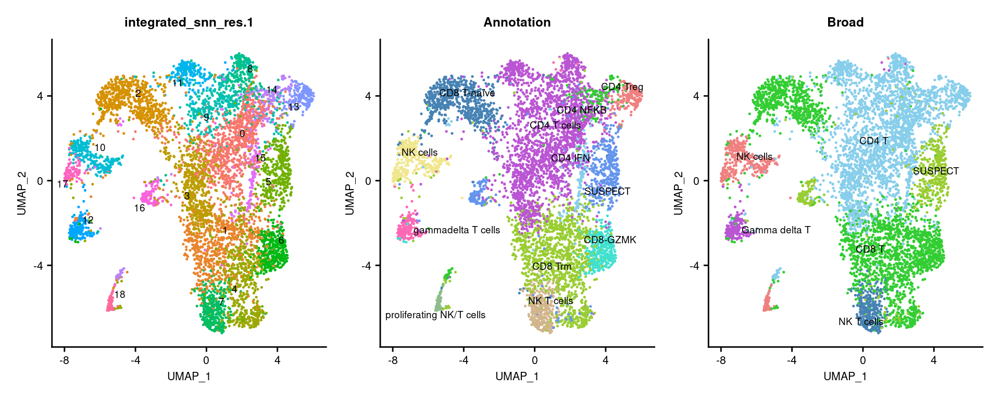
seuInt@meta.data %>%
ggplot(aes(x = Annotation, fill = Annotation)) +
geom_bar() +
geom_text(aes(label = ..count..), stat = "count",
vjust = -0.5, colour = "black", size = 2) +
theme(axis.text.x = element_text(angle = 90, vjust = 0.5, hjust = 1)) +
NoLegend() +
scale_fill_paletteer_d("miscpalettes::pastel")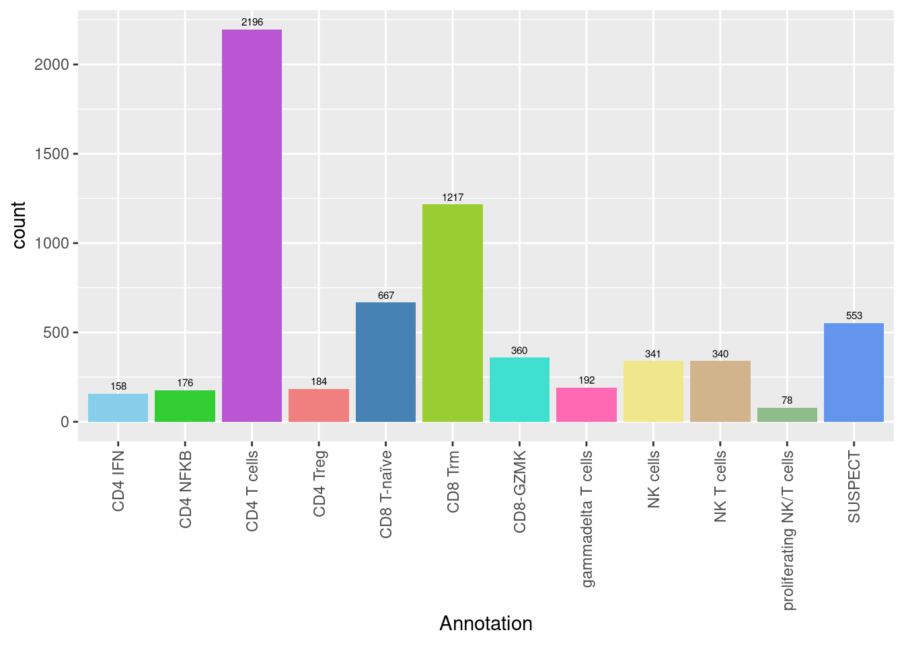
seuInt@meta.data %>%
ggplot(aes(x = Broad, fill = Broad)) +
geom_bar() +
geom_text(aes(label = ..count..), stat = "count",
vjust = -0.5, colour = "black", size = 2) +
theme(axis.text.x = element_text(angle = 90, vjust = 0.5, hjust = 1)) +
NoLegend() +
scale_fill_paletteer_d("miscpalettes::pastel")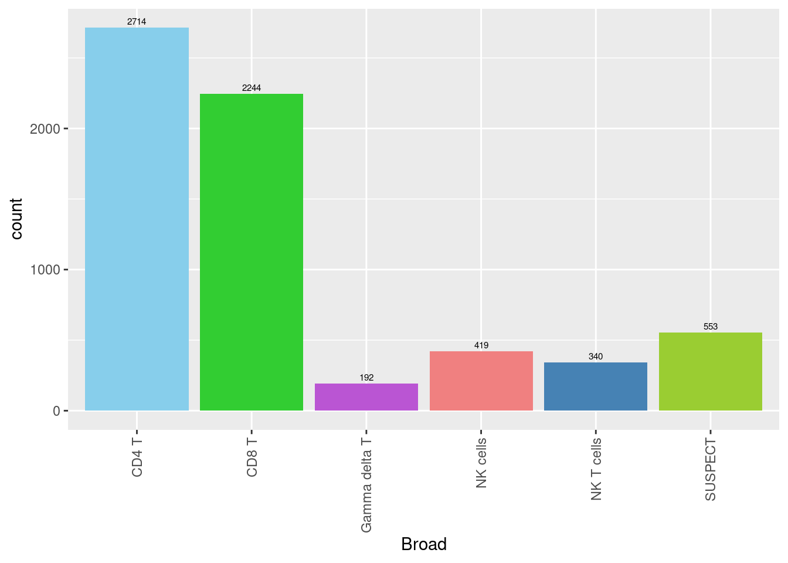
| Version | Author | Date |
|---|---|---|
| 3fa7e0a | Jovana Maksimovic | 2022-04-26 |
seuInt <- subset(seuInt, cells = which(seuInt$Annotation != "SUSPECT"))
seuInt$Annotation <- fct_drop(seuInt$Annotation)
seuInt$Broad <- fct_drop(seuInt$Broad)
DefaultAssay(seuInt) <- "integrated"
seuInt <- RunPCA(seuInt, verbose = FALSE, dims = 1:30) %>%
RunUMAP(verbose = FALSE, dims = 1:30)DimPlot(seuInt, reduction = 'umap', label = TRUE, repel = FALSE,
label.size = 3, group.by = "Annotation") +
NoLegend() +
scale_color_paletteer_d("miscpalettes::pastel") -> p2
DimPlot(seuInt, reduction = 'umap', label = TRUE, repel = FALSE,
label.size = 3, group.by = "Broad") +
NoLegend() +
scale_color_paletteer_d("miscpalettes::pastel") -> p1
(p1) & theme(text = element_text(size = 8),
axis.text = element_text(size = 8))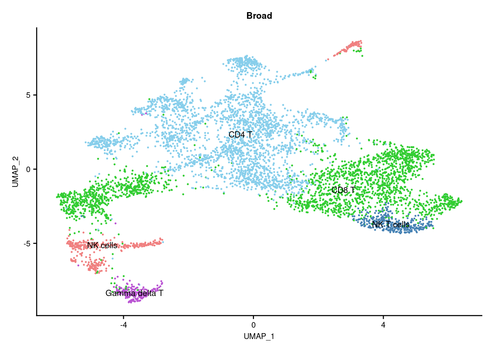
(p2) & theme(text = element_text(size = 8),
axis.text = element_text(size = 8)) -> f3a
f3a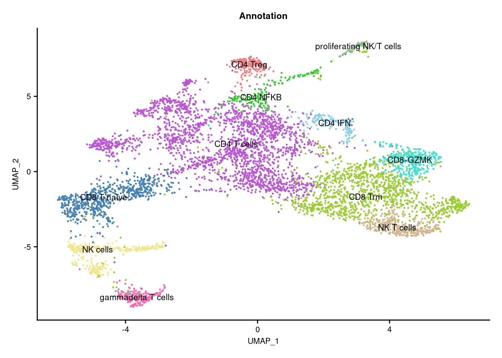
Cepo cluster marker genescepoMarkers <- Cepo(seuInt[["RNA"]]@data,
seuInt$Annotation,
exprsPct = 0.1,
logfc = 1)
sapply(1:ncol(cepoMarkers$stats), function(i){
names(sort(cepoMarkers$stats[,i], decreasing = TRUE))[1:20]
}) -> dat
colnames(dat) <- colnames(cepoMarkers$stats)
dat %>% knitr::kable()| CD4.IFN | CD4.NFKB | CD4.T.cells | CD4.Treg | CD8.T.naïve | CD8.Trm | CD8.GZMK | gammadelta.T.cells | NK.cells | NK.T.cells | proliferating.NK.T.cells |
|---|---|---|---|---|---|---|---|---|---|---|
| IFIT1 | TNFRSF4 | CD4 | CTLA4 | MAL | CD8B | GZMK | KLRG1 | KLRF1 | KIR2DL4 | TYMS |
| RSAD2 | IL4I1 | MAF | TBC1D4 | LEF1 | LINC02446 | GZMH | ZBTB16 | KRT81 | KLRC1 | MKI67 |
| HERC5 | TNFRSF18 | CTSH | IL2RA | SPINT2 | CD8A | CD8B | TRDC | NCAM1 | KLRC2 | PCLAF |
| IFI44L | ZC3H12D | GPR183 | IL1R2 | RTKN2 | GZMH | DTHD1 | GZMK | LINC00996 | DAPK2 | RRM2 |
| IFIT3 | IL2RA | IL7R | LAIR2 | XCL1 | ZNF683 | CCL4 | TRGC1 | TRDC | NMUR1 | NUSAP1 |
| MX2 | MAF | ADAM19 | FANK1 | KLRC3 | ITGA1 | CD8A | SLC4A10 | XCL1 | CD160 | ZWINT |
| OAS1 | TNFRSF25 | LINC01943 | ICA1 | ZNF683 | KLRC1 | KLRG1 | CEBPD | SPINK2 | ZNF683 | CDT1 |
| CMPK2 | NFKB2 | IL6R | LINC01943 | TRDC | KLRC2 | GZMA | DTHD1 | KRT86 | CLNK | CDK1 |
| MX1 | FURIN | TNFRSF25 | TNFRSF4 | NCR3 | CCL4 | GZMB | PLEK | TXK | CSF1 | CLSPN |
| OAS3 | CD82 | LIME1 | IL1R1 | TCF7 | KLRD1 | CD27 | CCL4 | CXXC5 | ITGA1 | TOP2A |
| USP18 | RELB | TRAT1 | CD4 | CXXC5 | IFNG | TIGIT | KLRB1 | ITGAX | SPRY2 | CENPW |
| IFIT2 | CSF2 | KLRB1 | LAYN | KLRC2 | GZMB | ITGA1 | CCL3 | XCL2 | CCL4L2 | ASF1B |
| IFI44 | MIR155HG | CD6 | IL6R | LINC02446 | TRGC2 | AOAH | NCR3 | KLRC1 | GNLY | TPX2 |
| DDX58 | BIRC3 | SIT1 | RTKN2 | TRGC2 | XCL2 | PLEK | KLRC1 | LAT2 | LINC02446 | CDCA5 |
| DDX60 | CCL20 | PAG1 | TIGIT | PLAC8 | DAPK2 | LAG3 | PRF1 | PLAC8 | CCL3L1 | UBE2C |
| HELZ2 | CTLA4 | CCL20 | MAF | IFITM3 | HOPX | SIT1 | CCL4L2 | AREG | GZMB | BIRC5 |
| OAS2 | CD4 | CTLA4 | CD79B | TXK | GZMA | CCL4L2 | GZMA | PTGDR | SRGAP3 | ASPM |
| PNPT1 | DNPH1 | LEF1 | ADTRP | IKZF2 | LAG3 | NKG7 | LAG3 | KIR2DL4 | ENTPD1 | TK1 |
| EIF2AK2 | MAL | ANKRD28 | IKZF4 | KLF2 | CCL4L2 | CCL3 | NKG7 | IFITM3 | CD8B | CENPM |
| PLSCR1 | POU2F2 | CORO1B | GADD45A | SPRY2 | KLRK1 | PRF1 | GZMB | FCER1G | SPRY1 | CENPF |
Cepo marker gene dot plotGenes duplicated between clusters are excluded.
DefaultAssay(seuInt) <- "RNA"
maxGenes <- 5
sigGenes <- lapply(1:ncol(dat), function(i){
dat[,i][1:maxGenes]
})
sig <- unlist(sigGenes)
geneCols <- c(rep(rep(c("blue","black"), each = maxGenes),
ceiling(ncol(dat)/2)))[1:length(sig)][!duplicated(sig)]
geneCols <- rep(paletteer_d("miscpalettes::pastel", ncol(dat)),
each = maxGenes)[1:length(sig)][!duplicated(sig)]
pal <- paletteer::paletteer_d("vapoRwave::cool")
DotPlot(seuInt,
features = sig[!duplicated(sig)],
group.by = "Annotation",
dot.scale = 2.5) +
FontSize(y.text = 10, x.text = 9) +
labs(y = element_blank(), x = element_blank()) +
theme(axis.text.x = element_text(color = geneCols,
angle = 90,
hjust = 1,
vjust = 0.5,
face = "bold"),
legend.text = element_text(size = 8),
legend.title = element_text(size = 10)) +
scale_color_gradient2(low = pal[1],
mid = pal[3],
high = pal[5]) -> f3b
f3b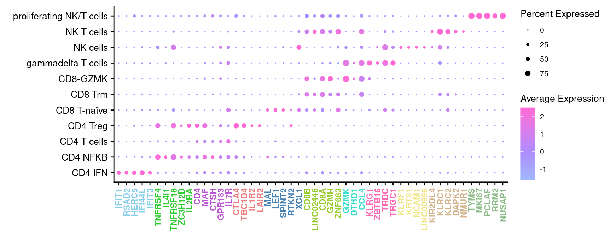
markers <- read_csv(file = here("data",
"T-NK_subclusters_cytokines.csv"),
col_names = FALSE)
p <- DotPlot(seuInt,
features = markers$X1,
cols = c("grey", "red"),
dot.scale = 5,
assay = "RNA",
group.by = "Annotation") +
theme(axis.text.x = element_text(angle = 90,
hjust = 1,
vjust = 0.5,
size = 8),
axis.text.y = element_text(size = 8),
text = element_text(size = 8)) +
coord_flip() +
labs(y = "Label", x = "Cytokine")
p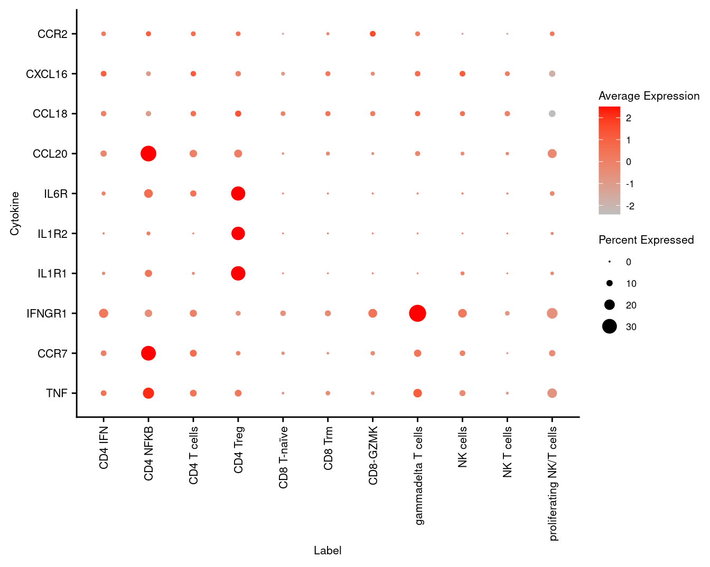
Seurat objectseuAdt <- readRDS(here("data",
"SCEs",
"04_COMBO.clustered_annotated_adt_diet.SEU.rds"))
seuAdt <- subset(seuAdt, cells = colnames(seuInt))
all(colnames(seuAdt) == colnames(seuInt))[1] TRUEseuInt[["ADT.dsb"]] <- seuAdt[["ADT.dsb"]]
seuInt[["ADT.raw"]] <- seuAdt[["ADT.raw"]]
seuIntAn object of class Seurat
30778 features across 5909 samples within 5 assays
Active assay: RNA (15578 features, 0 variable features)
4 other assays present: SCT, integrated, ADT.dsb, ADT.raw
2 dimensional reductions calculated: pca, umaprm(seuAdt)
gc() used (Mb) gc trigger (Mb) max used (Mb)
Ncells 13919589 743.4 24254305 1295.4 19823341 1058.7
Vcells 255836212 1951.9 688008946 5249.1 813350959 6205.4prots <- read_csv(file = here("data",
"sample_sheets",
"TotalSeq-A_Universal_Cocktail_v1.0.csv")) %>%
dplyr::filter(grepl("^A0", id)) %>%
dplyr::filter(!grepl("[Ii]sotype", name)) Normalised with DSB. C133_Neeland ADT data was transferred to CF_BAL_Pilot using reference mapping and transfer.
cbind(seuInt@meta.data,
as.data.frame(t(seuInt@assays$ADT.dsb@data))) %>%
dplyr::filter(experiment == 2) %>%
dplyr::group_by(Annotation) %>%
dplyr::summarize_at(.vars = prots$id, .funs = median) %>%
tibble::remove_rownames() %>%
tibble::column_to_rownames("Annotation") -> dsb.adt.plot
pheatmap::pheatmap((dsb.adt.plot),
color = viridis::viridis(25, option = "B"),
fontsize_row = 10, border_color = "black",
cellwidth = 10, cellheight = 10,
labels_col = gsub("anti-human", "", prots$name),
main = "C133_Neeland")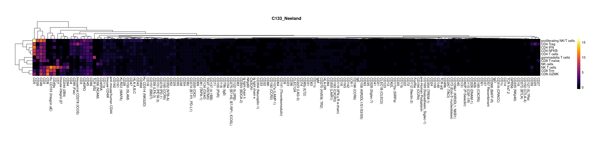
cbind(seuInt@meta.data,
as.data.frame(t(seuInt@assays$ADT.dsb@data))) %>%
dplyr::filter(experiment == 1) %>%
dplyr::group_by(Annotation) %>%
dplyr::summarize_at(.vars = prots$id, .funs = median) %>%
tibble::remove_rownames() %>%
tibble::column_to_rownames("Annotation") -> dsb.adt.plot
pheatmap::pheatmap((dsb.adt.plot),
color = viridis::viridis(25, option = "B"),
fontsize_row = 10, border_color = "black",
cellwidth = 10, cellheight = 10,
labels_col = gsub("anti-human", "", prots$name),
main = "CF_BAL_Pilot (Transferred)")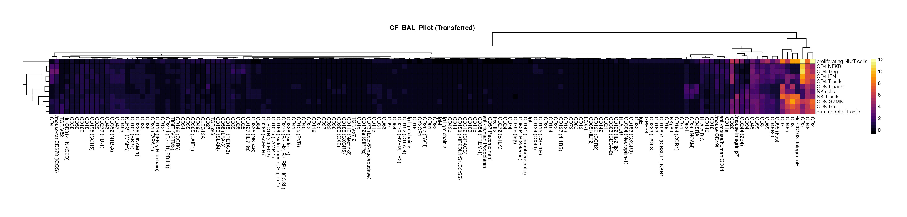
adt <- read_csv(file = here("data/Proteins_T-NK_22.04.22.csv"))
adt <- adt[!duplicated(adt$DNA_ID),]
cbind(seuInt@meta.data,
as.data.frame(t(seuInt@assays$ADT.dsb@data))) %>%
dplyr::group_by(Annotation, experiment) %>%
dplyr::summarize_at(.vars = adt$DNA_ID, .funs = median) %>%
pivot_longer(c(-Annotation, -experiment), names_to = "ADT",
values_to = "DSB Norm. Exp.") %>%
left_join(adt, by = c("ADT" = "DNA_ID")) %>%
mutate(Annotation = as.character(Annotation)) %>%
dplyr::rename(`Cell Label` = Annotation,
Protein = `Name for heatmap`) |>
dplyr::filter(experiment == 2) |>
ungroup() |>
heatmap(
.column = Protein,
.row = `Cell Label`,
.value = `DSB Norm. Exp.`,
scale = "row",
palette_value = circlize::colorRamp2(c(-2, -1, 0, 1, 2),
viridis::magma(5)),
rect_gp = grid::gpar(col = "white", lwd = 1),
show_row_names = TRUE,
column_names_gp = grid::gpar(fontsize = 10),
column_title_gp = grid::gpar(fontsize = 12),
row_names_gp = grid::gpar(fontsize = 10),
row_title_gp = grid::gpar(fontsize = 12),
column_title_side = "bottom") |>
add_tile(`Cell Label`, show_legend = FALSE,
show_annotation_name = FALSE,
palette = paletteer_d("miscpalettes::pastel", ncol(dat))) -> f3c
wrap_heatmap(f3c)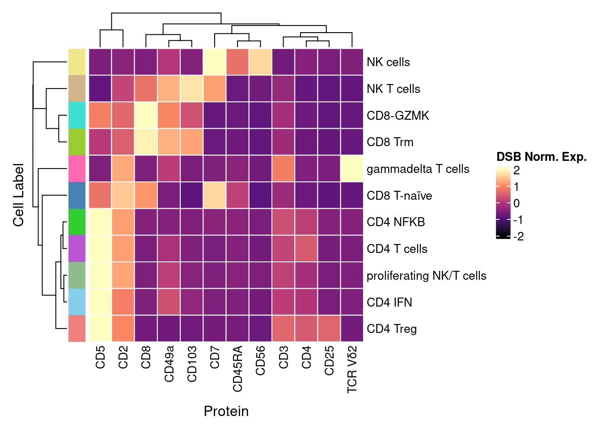
Import clinical characteristics and patient information and associate with genetic_donor IDs.
info <- read.csv(file = here("data/sample_sheets/Sample_information.csv"))
tab <- table(seuInt$HTO, seuInt$donor)
tab <- tab[rownames(tab) != "Unknown",]
apply(tab, 2, function(x){
names(which(x == max(x)))
}) %>% data.frame %>%
dplyr::rename("HTO" = ".") %>%
rownames_to_column(var = "donor") %>%
inner_join(info, by = c("HTO" = "Sample")) %>%
mutate(Batch = factor(Batch)) -> info
info %>% knitr::kable()| donor | HTO | Participant | Sex | Age | Disease | Batch |
|---|---|---|---|---|---|---|
| DM | DM | B1_CF | M | 2.99 | CF | 1 |
| donor_A | Human_HTO_8 | L2_CF | M | 5.95 | CF | 2 |
| donor_B | Human_HTO_1 | E2_CF | F | 5.99 | CF | 2 |
| donor_C | Human_HTO_4 | H2_CF | F | 5.89 | CF | 2 |
| donor_D | Human_HTO_6 | J2_CF | M | 5.05 | CF | 2 |
| donor_E | Human_HTO_3 | G2_CF | F | 4.91 | CF | 2 |
| donor_F | Human_HTO_5 | I2_CF | F | 5.93 | CF | 2 |
| donor_G | Human_HTO_2 | F2_CF | F | 6.02 | CF | 2 |
| donor_H | Human_HTO_7 | K2_CF | M | 4.92 | CF | 2 |
| JC | JC | C1_CF | M | 2.99 | CF | 1 |
| JLG | JLG | A1_Ctrl | M | 3.00 | Ctrl | 1 |
| LC | LC | D1_CF | M | 3.03 | CF | 1 |
# Differences in cell type proportions
props <- getTransformedProps(clusters = seuInt$Broad,
sample = seuInt$donor, transform="asin")
props$Proportions %>% knitr::kable()| DM | donor_A | donor_B | donor_C | donor_D | donor_E | donor_F | donor_G | donor_H | JC | JLG | LC | |
|---|---|---|---|---|---|---|---|---|---|---|---|---|
| CD4 T | 0.4633822 | 0.6578947 | 0.3145161 | 0.5494505 | 0.4558824 | 0.4745763 | 0.5760870 | 0.5228758 | 0.3917526 | 0.4477352 | 0.3561644 | 0.3971798 |
| CD8 T | 0.3142477 | 0.2614035 | 0.4032258 | 0.3406593 | 0.4926471 | 0.4406780 | 0.3260870 | 0.3126362 | 0.4536082 | 0.2334495 | 0.5098935 | 0.4712103 |
| Gamma delta T | 0.0679095 | 0.0052632 | 0.0000000 | 0.0302198 | 0.0073529 | 0.0000000 | 0.0108696 | 0.0686275 | 0.0206186 | 0.0313589 | 0.0152207 | 0.0258519 |
| NK cells | 0.1078562 | 0.0350877 | 0.0725806 | 0.0467033 | 0.0147059 | 0.0847458 | 0.0652174 | 0.0795207 | 0.0412371 | 0.0993031 | 0.0563166 | 0.0775558 |
| NK T cells | 0.0466045 | 0.0403509 | 0.2096774 | 0.0329670 | 0.0294118 | 0.0000000 | 0.0217391 | 0.0163399 | 0.0927835 | 0.1881533 | 0.0624049 | 0.0282021 |
props$Proportions %>%
data.frame %>%
inner_join(info, by = c("sample" = "donor")) %>%
ggplot(aes(x = Participant, y = Freq, fill = clusters)) +
geom_bar(stat = "identity") +
theme_classic() +
theme(axis.text.x = element_text(angle = 90,
vjust = 0.5,
hjust = 1),
legend.text = element_text(size = 8)) +
labs( y = "Proportion", fill = "Cell label") +
scale_fill_paletteer_d("miscpalettes::pastel")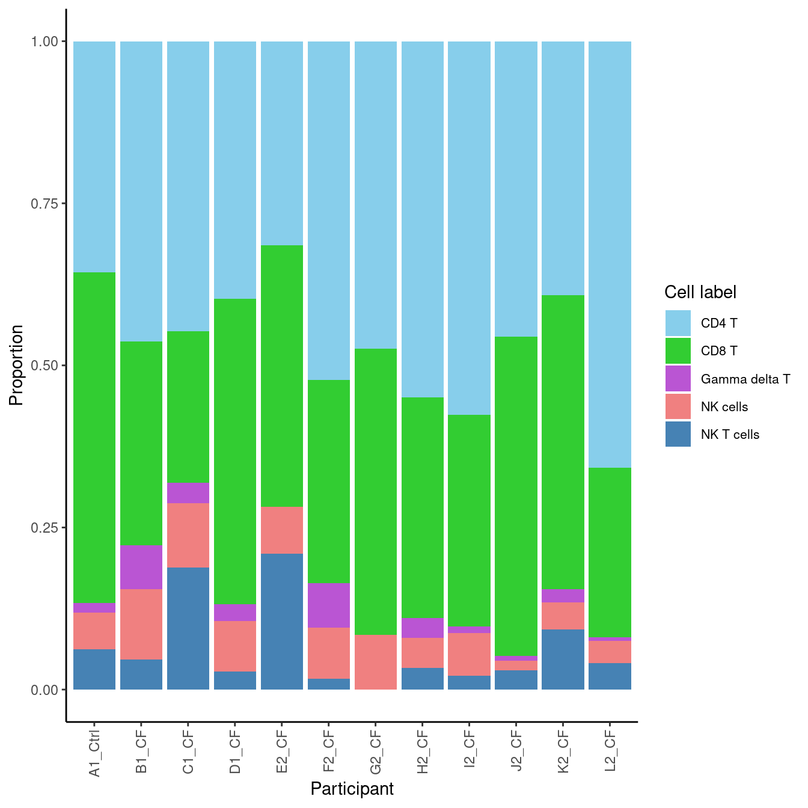
props$Proportions %>%
data.frame %>%
inner_join(info, by = c("sample" = "donor")) %>%
ggplot(aes(x = Participant, y = Freq, fill = clusters)) +
geom_bar(stat = "identity") +
facet_wrap(~clusters, scales = "free_y") +
theme_classic() +
NoLegend() +
theme(axis.text.x = element_text(angle = 90,
vjust = 0.5,
hjust = 1,
size = 8),
strip.text = element_text(size = 10),
axis.text = element_text(size = 8)) +
labs( y = "Proportion", fill = "Cell label") +
scale_fill_paletteer_d("miscpalettes::pastel")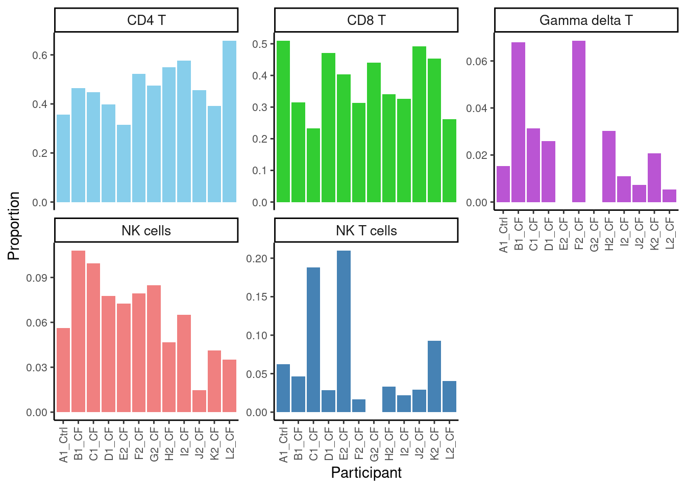
# Differences in cell type proportions
props <- getTransformedProps(clusters = seuInt$Annotation,
sample = seuInt$donor, transform="asin")
props$Proportions %>% knitr::kable()| DM | donor_A | donor_B | donor_C | donor_D | donor_E | donor_F | donor_G | donor_H | JC | JLG | LC | |
|---|---|---|---|---|---|---|---|---|---|---|---|---|
| CD4 IFN | 0.0159787 | 0.0263158 | 0.0000000 | 0.0274725 | 0.0147059 | 0.0169492 | 0.0434783 | 0.0239651 | 0.0206186 | 0.0435540 | 0.0258752 | 0.0352526 |
| CD4 NFKB | 0.0452730 | 0.0701754 | 0.0645161 | 0.0192308 | 0.0147059 | 0.0254237 | 0.0434783 | 0.0076253 | 0.0000000 | 0.0609756 | 0.0144597 | 0.0199765 |
| CD4 T cells | 0.3475366 | 0.5175439 | 0.2500000 | 0.4615385 | 0.3970588 | 0.3728814 | 0.4565217 | 0.4498911 | 0.3608247 | 0.3275261 | 0.2983257 | 0.3207991 |
| CD4 Treg | 0.0545939 | 0.0438596 | 0.0000000 | 0.0412088 | 0.0294118 | 0.0593220 | 0.0326087 | 0.0413943 | 0.0103093 | 0.0156794 | 0.0175038 | 0.0211516 |
| CD8 T-naïve | 0.0785619 | 0.0508772 | 0.0645161 | 0.0659341 | 0.1838235 | 0.1440678 | 0.0217391 | 0.1252723 | 0.1237113 | 0.0958188 | 0.0791476 | 0.2549941 |
| CD8 Trm | 0.0972037 | 0.1771930 | 0.2661290 | 0.2225275 | 0.2279412 | 0.1610169 | 0.3043478 | 0.1176471 | 0.2886598 | 0.1114983 | 0.3767123 | 0.1833137 |
| CD8-GZMK | 0.1384820 | 0.0333333 | 0.0725806 | 0.0521978 | 0.0808824 | 0.1355932 | 0.0000000 | 0.0697168 | 0.0412371 | 0.0261324 | 0.0540335 | 0.0329025 |
| gammadelta T cells | 0.0679095 | 0.0052632 | 0.0000000 | 0.0302198 | 0.0073529 | 0.0000000 | 0.0108696 | 0.0686275 | 0.0206186 | 0.0313589 | 0.0152207 | 0.0258519 |
| NK cells | 0.0972037 | 0.0315789 | 0.0725806 | 0.0439560 | 0.0147059 | 0.0762712 | 0.0543478 | 0.0599129 | 0.0309278 | 0.0905923 | 0.0502283 | 0.0387779 |
| NK T cells | 0.0466045 | 0.0403509 | 0.2096774 | 0.0329670 | 0.0294118 | 0.0000000 | 0.0217391 | 0.0163399 | 0.0927835 | 0.1881533 | 0.0624049 | 0.0282021 |
| proliferating NK/T cells | 0.0106525 | 0.0035088 | 0.0000000 | 0.0027473 | 0.0000000 | 0.0084746 | 0.0108696 | 0.0196078 | 0.0103093 | 0.0087108 | 0.0060883 | 0.0387779 |
props$Proportions %>%
data.frame %>%
inner_join(info, by = c("sample" = "donor")) %>%
ggplot(aes(x = Participant, y = Freq, fill = clusters)) +
geom_bar(stat = "identity") +
theme_classic() +
theme(axis.text.x = element_text(angle = 90,
vjust = 0.5,
hjust = 1),
legend.text = element_text(size = 8)) +
labs(y = "Proportion", fill = "Cell label") +
scale_fill_paletteer_d("miscpalettes::pastel")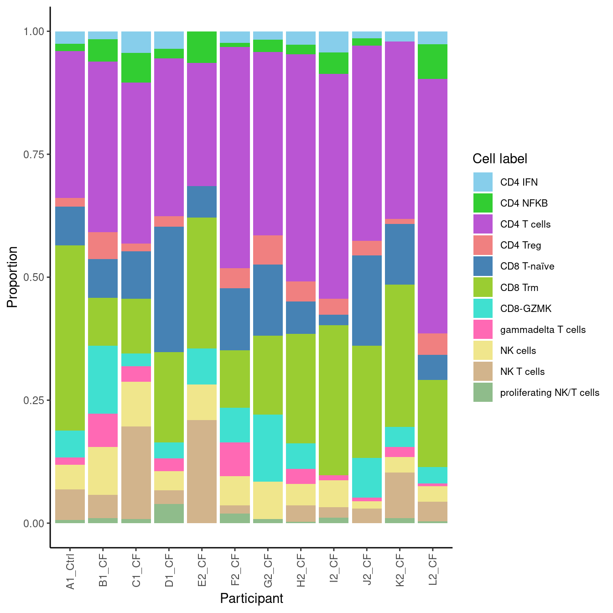
props$Proportions %>%
data.frame %>%
inner_join(info, by = c("sample" = "donor")) %>%
ggplot(aes(x = Participant, y = Freq, fill = clusters)) +
geom_bar(stat = "identity") +
facet_wrap(~clusters, scales = "free_y") +
theme_classic() +
NoLegend() +
theme(axis.text.x = element_text(angle = 90,
vjust = 0.5,
hjust = 1,
size = 8),
strip.text = element_text(size = 10),
axis.text = element_text(size = 0)) +
labs(y = "Proportion", fill = "Cell label") +
scale_fill_paletteer_d("miscpalettes::pastel")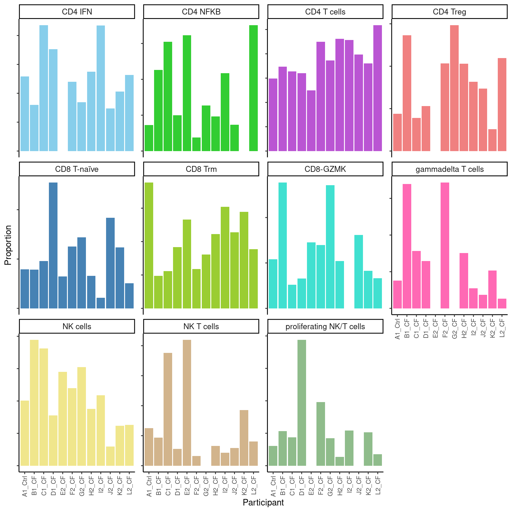
out <- here(glue("data/SCEs/04_COMBO.clean_tcells_diet.SEU.rds"))
if(!file.exists(out)){
DefaultAssay(seuInt) <- "RNA"
saveRDS(DietSeurat(seuInt,
assays = c("RNA", "ADT.dsb", "ADT.raw"),
dimreducs = NULL,
graphs = NULL), out)
}layout = "AAAA
AAAA
AAAA
BBBB
BBBB
CCCC
CCCC
CCCC"
((f3a + ggtitle("")) +
f3b +
wrap_heatmap(f3c)) +
plot_layout(design = layout) +
plot_annotation(tag_levels = "A") &
theme(plot.tag = element_text(size = 14, face = "bold"))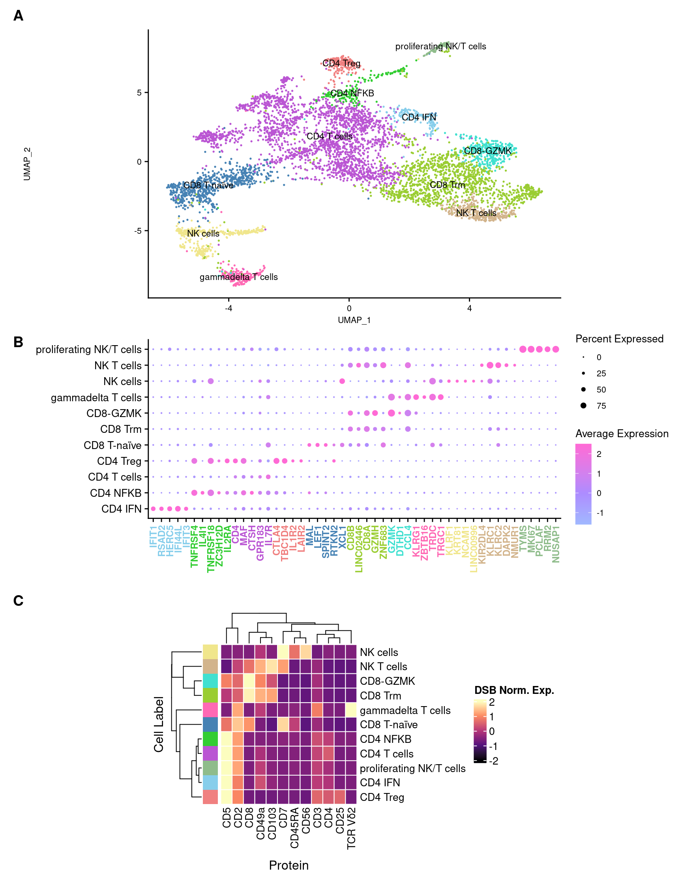
sessioninfo::session_info()─ Session info ───────────────────────────────────────────────────────────────
setting value
version R version 4.1.0 (2021-05-18)
os CentOS Linux 7 (Core)
system x86_64, linux-gnu
ui X11
language (EN)
collate en_AU.UTF-8
ctype en_AU.UTF-8
tz Australia/Melbourne
date 2022-05-23
pandoc 2.14.0.3 @ /usr/lib/rstudio-server/bin/pandoc/ (via rmarkdown)
─ Packages ───────────────────────────────────────────────────────────────────
! package * version date (UTC) lib source
P abind 1.4-5 2016-07-21 [?] CRAN (R 4.1.0)
P annotate * 1.72.0 2021-10-26 [?] Bioconductor
P AnnotationDbi * 1.56.2 2021-11-09 [?] Bioconductor
P AnnotationFilter * 1.18.0 2021-10-26 [?] Bioconductor
P AnnotationHub * 3.2.0 2021-10-26 [?] Bioconductor
P assertthat 0.2.1 2019-03-21 [?] CRAN (R 4.1.0)
P backports 1.4.1 2021-12-13 [?] CRAN (R 4.1.0)
P beachmat 2.10.0 2021-10-26 [?] Bioconductor
P beeswarm 0.4.0 2021-06-01 [?] CRAN (R 4.1.0)
P Biobase * 2.54.0 2021-10-26 [?] Bioconductor
P BiocFileCache * 2.2.0 2021-10-26 [?] Bioconductor
P BiocGenerics * 0.40.0 2021-10-26 [?] Bioconductor
P BiocIO 1.4.0 2021-10-26 [?] Bioconductor
P BiocManager 1.30.16 2021-06-15 [?] CRAN (R 4.1.0)
P BiocNeighbors 1.12.0 2021-10-26 [?] Bioconductor
P BiocParallel * 1.28.3 2021-12-09 [?] Bioconductor
P BiocSingular 1.10.0 2021-10-26 [?] Bioconductor
P BiocVersion 3.14.0 2021-05-19 [?] Bioconductor
P biomaRt 2.50.1 2021-11-21 [?] Bioconductor
P Biostrings 2.62.0 2021-10-26 [?] Bioconductor
P bit 4.0.4 2020-08-04 [?] CRAN (R 4.1.0)
P bit64 4.0.5 2020-08-30 [?] CRAN (R 4.0.2)
P bitops 1.0-7 2021-04-24 [?] CRAN (R 4.0.2)
P blob 1.2.2 2021-07-23 [?] CRAN (R 4.1.0)
P bluster 1.4.0 2021-10-26 [?] Bioconductor
P broom 0.7.11 2022-01-03 [?] CRAN (R 4.1.0)
P bslib 0.3.1 2021-10-06 [?] CRAN (R 4.1.0)
P cachem 1.0.6 2021-08-19 [?] CRAN (R 4.1.0)
P callr 3.7.0 2021-04-20 [?] CRAN (R 4.1.0)
P caTools 1.18.2 2021-03-28 [?] CRAN (R 4.1.0)
P cellranger 1.1.0 2016-07-27 [?] CRAN (R 4.1.0)
P Cepo * 1.0.0 2021-10-26 [?] Bioconductor
P circlize 0.4.13 2021-06-09 [?] CRAN (R 4.1.0)
P cli 3.1.0 2021-10-27 [?] CRAN (R 4.1.0)
P clue 0.3-60 2021-10-11 [?] CRAN (R 4.1.0)
P cluster 2.1.2 2021-04-17 [?] CRAN (R 4.1.0)
P clustree * 0.4.4 2021-11-08 [?] CRAN (R 4.1.0)
P codetools 0.2-18 2020-11-04 [?] CRAN (R 4.1.0)
P colorspace 2.0-2 2021-06-24 [?] CRAN (R 4.0.2)
P ComplexHeatmap 2.10.0 2021-10-26 [?] Bioconductor
P cowplot 1.1.1 2020-12-30 [?] CRAN (R 4.0.2)
P crayon 1.4.2 2021-10-29 [?] CRAN (R 4.1.0)
P curl 4.3.2 2021-06-23 [?] CRAN (R 4.1.0)
P data.table 1.14.2 2021-09-27 [?] CRAN (R 4.1.0)
P DBI 1.1.2 2021-12-20 [?] CRAN (R 4.1.0)
P dbplyr * 2.1.1 2021-04-06 [?] CRAN (R 4.1.0)
P DelayedArray 0.20.0 2021-10-26 [?] Bioconductor
P DelayedMatrixStats 1.16.0 2021-10-26 [?] Bioconductor
P deldir 1.0-6 2021-10-23 [?] CRAN (R 4.1.0)
P dendextend 1.15.2 2021-10-28 [?] CRAN (R 4.1.0)
P digest 0.6.29 2021-12-01 [?] CRAN (R 4.1.0)
P doParallel 1.0.16 2020-10-16 [?] CRAN (R 4.0.2)
P doRNG 1.8.2 2020-01-27 [?] CRAN (R 4.1.0)
P dplyr * 1.0.7 2021-06-18 [?] CRAN (R 4.1.0)
P dqrng 0.3.0 2021-05-01 [?] CRAN (R 4.1.0)
P DropletUtils * 1.14.1 2021-11-08 [?] Bioconductor
P DT 0.20 2021-11-15 [?] CRAN (R 4.1.0)
P edgeR * 3.36.0 2021-10-26 [?] Bioconductor
P EGSEA * 1.22.0 2021-10-26 [?] Bioconductor
P EGSEAdata 1.22.0 2021-10-30 [?] Bioconductor
P ellipsis 0.3.2 2021-04-29 [?] CRAN (R 4.0.2)
P ensembldb * 2.18.2 2021-11-08 [?] Bioconductor
P evaluate 0.14 2019-05-28 [?] CRAN (R 4.0.2)
P fansi 1.0.0 2022-01-10 [?] CRAN (R 4.1.0)
P farver 2.1.0 2021-02-28 [?] CRAN (R 4.0.2)
P fastmap 1.1.0 2021-01-25 [?] CRAN (R 4.1.0)
P filelock 1.0.2 2018-10-05 [?] CRAN (R 4.1.0)
P fitdistrplus 1.1-6 2021-09-28 [?] CRAN (R 4.1.0)
P forcats * 0.5.1 2021-01-27 [?] CRAN (R 4.1.0)
P foreach 1.5.1 2020-10-15 [?] CRAN (R 4.0.2)
P fs 1.5.2 2021-12-08 [?] CRAN (R 4.1.0)
P future 1.23.0 2021-10-31 [?] CRAN (R 4.1.0)
P future.apply 1.8.1 2021-08-10 [?] CRAN (R 4.1.0)
P gage * 2.44.0 2021-10-26 [?] Bioconductor
P generics 0.1.1 2021-10-25 [?] CRAN (R 4.1.0)
GenomeInfoDb * 1.30.1 2022-01-30 [1] Bioconductor
P GenomeInfoDbData 1.2.7 2021-12-21 [?] Bioconductor
P GenomicAlignments 1.30.0 2021-10-26 [?] Bioconductor
P GenomicFeatures * 1.46.3 2021-12-30 [?] Bioconductor
P GenomicRanges * 1.46.1 2021-11-18 [?] Bioconductor
P GetoptLong 1.0.5 2020-12-15 [?] CRAN (R 4.0.2)
P getPass 0.2-2 2017-07-21 [?] CRAN (R 4.0.2)
P ggalluvial * 0.12.3 2020-12-05 [?] CRAN (R 4.1.0)
P ggbeeswarm 0.6.0 2017-08-07 [?] CRAN (R 4.1.0)
P ggforce 0.3.3 2021-03-05 [?] CRAN (R 4.1.0)
P ggplot2 * 3.3.5 2021-06-25 [?] CRAN (R 4.0.2)
P ggraph * 2.0.5 2021-02-23 [?] CRAN (R 4.1.0)
P ggrepel 0.9.1 2021-01-15 [?] CRAN (R 4.1.0)
P ggridges 0.5.3 2021-01-08 [?] CRAN (R 4.1.0)
P git2r 0.29.0 2021-11-22 [?] CRAN (R 4.1.0)
P glmGamPoi * 1.6.0 2021-10-26 [?] Bioconductor
P GlobalOptions 0.1.2 2020-06-10 [?] CRAN (R 4.1.0)
P globals 0.14.0 2020-11-22 [?] CRAN (R 4.0.2)
P globaltest 5.48.0 2021-10-26 [?] Bioconductor
P glue * 1.6.0 2021-12-17 [?] CRAN (R 4.1.0)
P GO.db * 3.14.0 2021-12-21 [?] Bioconductor
P goftest 1.2-3 2021-10-07 [?] CRAN (R 4.1.0)
P gplots 3.1.1 2020-11-28 [?] CRAN (R 4.0.2)
P graph * 1.72.0 2021-10-26 [?] Bioconductor
P graphlayouts 0.8.0 2022-01-03 [?] CRAN (R 4.1.0)
P gridExtra 2.3 2017-09-09 [?] CRAN (R 4.1.0)
P GSA 1.03.1 2019-01-31 [?] CRAN (R 4.1.0)
P GSEABase * 1.56.0 2021-10-26 [?] Bioconductor
P GSVA 1.42.0 2021-10-26 [?] Bioconductor
P gtable 0.3.0 2019-03-25 [?] CRAN (R 4.1.0)
P gtools 3.9.2 2021-06-06 [?] CRAN (R 4.1.0)
P haven 2.4.3 2021-08-04 [?] CRAN (R 4.1.0)
P HDF5Array 1.22.1 2021-11-14 [?] Bioconductor
P here * 1.0.1 2020-12-13 [?] CRAN (R 4.0.2)
P hgu133a.db 3.13.0 2022-01-24 [?] Bioconductor
P hgu133plus2.db 3.13.0 2022-01-24 [?] Bioconductor
P highr 0.9 2021-04-16 [?] CRAN (R 4.1.0)
P hms 1.1.1 2021-09-26 [?] CRAN (R 4.1.0)
P htmltools 0.5.2 2021-08-25 [?] CRAN (R 4.1.0)
P HTMLUtils 0.1.7 2015-01-17 [?] CRAN (R 4.1.0)
P htmlwidgets 1.5.4 2021-09-08 [?] CRAN (R 4.1.0)
P httpuv 1.6.5 2022-01-05 [?] CRAN (R 4.1.0)
P httr 1.4.2 2020-07-20 [?] CRAN (R 4.1.0)
P hwriter 1.3.2 2014-09-10 [?] CRAN (R 4.1.0)
P ica 1.0-2 2018-05-24 [?] CRAN (R 4.1.0)
P igraph 1.2.11 2022-01-04 [?] CRAN (R 4.1.0)
P interactiveDisplayBase 1.32.0 2021-10-26 [?] Bioconductor
P IRanges * 2.28.0 2021-10-26 [?] Bioconductor
P irlba 2.3.5 2021-12-06 [?] CRAN (R 4.1.0)
P iterators 1.0.13 2020-10-15 [?] CRAN (R 4.0.2)
P janitor * 2.1.0 2021-01-05 [?] CRAN (R 4.0.2)
P jquerylib 0.1.4 2021-04-26 [?] CRAN (R 4.1.0)
P jsonlite 1.7.2 2020-12-09 [?] CRAN (R 4.0.2)
P KEGGdzPathwaysGEO 1.32.0 2021-10-30 [?] Bioconductor
P KEGGgraph 1.54.0 2021-10-26 [?] Bioconductor
P KEGGREST 1.34.0 2021-10-26 [?] Bioconductor
P KernSmooth 2.23-20 2021-05-03 [?] CRAN (R 4.1.0)
P knitr 1.37 2021-12-16 [?] CRAN (R 4.1.0)
P labeling 0.4.2 2020-10-20 [?] CRAN (R 4.0.2)
P later 1.3.0 2021-08-18 [?] CRAN (R 4.1.0)
P lattice 0.20-45 2021-09-22 [?] CRAN (R 4.1.0)
P lazyeval 0.2.2 2019-03-15 [?] CRAN (R 4.1.0)
P leiden 0.3.9 2021-07-27 [?] CRAN (R 4.1.0)
P lifecycle 1.0.1 2021-09-24 [?] CRAN (R 4.1.0)
P limma * 3.50.0 2021-10-26 [?] Bioconductor
P listenv 0.8.0 2019-12-05 [?] CRAN (R 4.1.0)
P lmtest 0.9-39 2021-11-07 [?] CRAN (R 4.1.0)
P locfit 1.5-9.4 2020-03-25 [?] CRAN (R 4.1.0)
P lubridate 1.8.0 2021-10-07 [?] CRAN (R 4.1.0)
P magrittr 2.0.1 2020-11-17 [?] CRAN (R 4.0.2)
P MASS 7.3-53.1 2021-02-12 [?] CRAN (R 4.0.2)
P mathjaxr 1.4-0 2021-03-01 [?] CRAN (R 4.1.0)
P Matrix * 1.4-0 2021-12-08 [?] CRAN (R 4.1.0)
P MatrixGenerics * 1.6.0 2021-10-26 [?] Bioconductor
P matrixStats * 0.61.0 2021-09-17 [?] CRAN (R 4.1.0)
P memoise 2.0.1 2021-11-26 [?] CRAN (R 4.1.0)
P metap 1.7 2021-12-16 [?] CRAN (R 4.1.0)
P metapod 1.2.0 2021-10-26 [?] Bioconductor
P mgcv 1.8-38 2021-10-06 [?] CRAN (R 4.1.0)
P mime 0.12 2021-09-28 [?] CRAN (R 4.1.0)
P miniUI 0.1.1.1 2018-05-18 [?] CRAN (R 4.1.0)
P mnormt 2.0.2 2020-09-01 [?] CRAN (R 4.0.2)
P modelr 0.1.8 2020-05-19 [?] CRAN (R 4.0.2)
P multcomp 1.4-18 2022-01-04 [?] CRAN (R 4.1.0)
P multtest 2.50.0 2021-10-26 [?] Bioconductor
P munsell 0.5.0 2018-06-12 [?] CRAN (R 4.1.0)
P mutoss 0.1-12 2017-12-04 [?] CRAN (R 4.1.0)
P mvtnorm 1.1-3 2021-10-08 [?] CRAN (R 4.1.0)
P nlme 3.1-153 2021-09-07 [?] CRAN (R 4.1.0)
P numDeriv 2016.8-1.1 2019-06-06 [?] CRAN (R 4.1.0)
P org.Hs.eg.db * 3.14.0 2021-12-21 [?] Bioconductor
P org.Mm.eg.db 3.14.0 2022-01-24 [?] Bioconductor
P org.Rn.eg.db 3.14.0 2022-01-24 [?] Bioconductor
P PADOG 1.36.0 2021-10-26 [?] Bioconductor
P paletteer * 1.4.0 2021-07-20 [?] CRAN (R 4.1.0)
P parallelly 1.30.0 2021-12-17 [?] CRAN (R 4.1.0)
P patchwork * 1.1.1 2020-12-17 [?] CRAN (R 4.0.2)
P pathview * 1.34.0 2021-10-26 [?] Bioconductor
P pbapply 1.5-0 2021-09-16 [?] CRAN (R 4.1.0)
P pheatmap * 1.0.12 2019-01-04 [?] CRAN (R 4.1.0)
P pillar 1.6.4 2021-10-18 [?] CRAN (R 4.1.0)
P pkgconfig 2.0.3 2019-09-22 [?] CRAN (R 4.1.0)
P plotly 4.10.0 2021-10-09 [?] CRAN (R 4.1.0)
P plotrix 3.8-2 2021-09-08 [?] CRAN (R 4.1.0)
P plyr 1.8.6 2020-03-03 [?] CRAN (R 4.0.2)
P png 0.1-7 2013-12-03 [?] CRAN (R 4.1.0)
P polyclip 1.10-0 2019-03-14 [?] CRAN (R 4.1.0)
P prettyunits 1.1.1 2020-01-24 [?] CRAN (R 4.0.2)
P prismatic 1.1.0 2021-10-17 [?] CRAN (R 4.1.0)
P processx 3.5.2 2021-04-30 [?] CRAN (R 4.1.0)
P progress 1.2.2 2019-05-16 [?] CRAN (R 4.1.0)
P promises 1.2.0.1 2021-02-11 [?] CRAN (R 4.0.2)
P ProtGenerics 1.26.0 2021-10-26 [?] Bioconductor
P ps 1.6.0 2021-02-28 [?] CRAN (R 4.1.0)
P purrr * 0.3.4 2020-04-17 [?] CRAN (R 4.0.2)
P R.methodsS3 1.8.1 2020-08-26 [?] CRAN (R 4.0.2)
P R.oo 1.24.0 2020-08-26 [?] CRAN (R 4.0.2)
P R.utils 2.11.0 2021-09-26 [?] CRAN (R 4.1.0)
P R2HTML 2.3.2 2016-06-23 [?] CRAN (R 4.1.0)
P R6 2.5.1 2021-08-19 [?] CRAN (R 4.1.0)
P RANN 2.6.1 2019-01-08 [?] CRAN (R 4.1.0)
P rappdirs 0.3.3 2021-01-31 [?] CRAN (R 4.0.2)
P rbibutils 2.2.7 2021-12-07 [?] CRAN (R 4.1.0)
P RColorBrewer 1.1-2 2014-12-07 [?] CRAN (R 4.0.2)
P Rcpp 1.0.7 2021-07-07 [?] CRAN (R 4.1.0)
P RcppAnnoy 0.0.19 2021-07-30 [?] CRAN (R 4.1.0)
RCurl 1.98-1.6 2022-02-08 [1] CRAN (R 4.1.0)
P Rdpack 2.1.3 2021-12-08 [?] CRAN (R 4.1.0)
P readr * 2.1.1 2021-11-30 [?] CRAN (R 4.1.0)
P readxl 1.3.1 2019-03-13 [?] CRAN (R 4.1.0)
P rematch2 2.1.2 2020-05-01 [?] CRAN (R 4.1.0)
P renv 0.15.0-14 2022-01-10 [?] Github (rstudio/renv@a3b90eb)
P reprex 2.0.1 2021-08-05 [?] CRAN (R 4.1.0)
P reshape2 1.4.4 2020-04-09 [?] CRAN (R 4.1.0)
P restfulr 0.0.13 2017-08-06 [?] CRAN (R 4.1.0)
P reticulate 1.22 2021-09-17 [?] CRAN (R 4.1.0)
P Rgraphviz 2.38.0 2021-10-26 [?] Bioconductor
P rhdf5 2.38.0 2021-10-26 [?] Bioconductor
P rhdf5filters 1.6.0 2021-10-26 [?] Bioconductor
P Rhdf5lib 1.16.0 2021-10-26 [?] Bioconductor
P rjson 0.2.21 2022-01-09 [?] CRAN (R 4.1.0)
P rlang 0.4.12 2021-10-18 [?] CRAN (R 4.1.0)
P rmarkdown 2.11 2021-09-14 [?] CRAN (R 4.1.0)
P rngtools 1.5.2 2021-09-20 [?] CRAN (R 4.1.0)
P ROCR 1.0-11 2020-05-02 [?] CRAN (R 4.1.0)
P rpart 4.1-15 2019-04-12 [?] CRAN (R 4.1.0)
P rprojroot 2.0.2 2020-11-15 [?] CRAN (R 4.0.2)
P Rsamtools 2.10.0 2021-10-26 [?] Bioconductor
P RSpectra 0.16-0 2019-12-01 [?] CRAN (R 4.1.0)
P RSQLite 2.2.9 2021-12-06 [?] CRAN (R 4.1.0)
P rstudioapi 0.13 2020-11-12 [?] CRAN (R 4.0.2)
P rsvd 1.0.5 2021-04-16 [?] CRAN (R 4.1.0)
P rtracklayer 1.54.0 2021-10-26 [?] Bioconductor
P Rtsne 0.15 2018-11-10 [?] CRAN (R 4.1.0)
P rvest 1.0.2 2021-10-16 [?] CRAN (R 4.1.0)
P S4Vectors * 0.32.3 2021-11-21 [?] Bioconductor
P safe 3.34.0 2021-10-26 [?] Bioconductor
P sandwich 3.0-1 2021-05-18 [?] CRAN (R 4.1.0)
P sass 0.4.0 2021-05-12 [?] CRAN (R 4.1.0)
P ScaledMatrix 1.2.0 2021-10-26 [?] Bioconductor
P scales * 1.1.1 2020-05-11 [?] CRAN (R 4.0.2)
P scater * 1.22.0 2021-10-26 [?] Bioconductor
P scattermore 0.7 2020-11-24 [?] CRAN (R 4.1.0)
P scran * 1.22.1 2021-11-14 [?] Bioconductor
P sctransform 0.3.3 2022-01-13 [?] CRAN (R 4.1.0)
P scuttle * 1.4.0 2021-10-26 [?] Bioconductor
P sessioninfo 1.2.2 2021-12-06 [?] CRAN (R 4.1.0)
P Seurat * 4.0.6 2021-12-16 [?] CRAN (R 4.1.0)
P SeuratObject * 4.0.4 2021-11-23 [?] CRAN (R 4.1.0)
P shape 1.4.6 2021-05-19 [?] CRAN (R 4.1.0)
P shiny 1.7.1 2021-10-02 [?] CRAN (R 4.1.0)
P SingleCellExperiment * 1.16.0 2021-10-26 [?] Bioconductor
P sn 2.0.1 2021-11-26 [?] CRAN (R 4.1.0)
P snakecase 0.11.0 2019-05-25 [?] CRAN (R 4.0.2)
P SparseM * 1.81 2021-02-18 [?] CRAN (R 4.1.0)
P sparseMatrixStats 1.6.0 2021-10-26 [?] Bioconductor
P spatstat.core 2.3-2 2021-11-26 [?] CRAN (R 4.1.0)
P spatstat.data 2.1-2 2021-12-17 [?] CRAN (R 4.1.0)
P spatstat.geom 2.3-1 2021-12-10 [?] CRAN (R 4.1.0)
P spatstat.sparse 2.1-0 2021-12-17 [?] CRAN (R 4.1.0)
P spatstat.utils 2.3-0 2021-12-12 [?] CRAN (R 4.1.0)
P speckle * 0.0.3 2022-03-09 [?] Github (Oshlack/speckle@fc07773)
P statmod 1.4.36 2021-05-10 [?] CRAN (R 4.1.0)
P stringi 1.7.6 2021-11-29 [?] CRAN (R 4.1.0)
P stringr * 1.4.0 2019-02-10 [?] CRAN (R 4.0.2)
P SummarizedExperiment * 1.24.0 2021-10-26 [?] Bioconductor
P survival 3.2-13 2021-08-24 [?] CRAN (R 4.1.0)
P tensor 1.5 2012-05-05 [?] CRAN (R 4.1.0)
P TFisher 0.2.0 2018-03-21 [?] CRAN (R 4.1.0)
P TH.data 1.1-0 2021-09-27 [?] CRAN (R 4.1.0)
P tibble * 3.1.6 2021-11-07 [?] CRAN (R 4.1.0)
P tidygraph 1.2.0 2020-05-12 [?] CRAN (R 4.0.2)
P tidyHeatmap * 1.7.0 2022-05-13 [?] Github (stemangiola/tidyHeatmap@241aec2)
P tidyr * 1.1.4 2021-09-27 [?] CRAN (R 4.1.0)
P tidyselect 1.1.1 2021-04-30 [?] CRAN (R 4.1.0)
P tidyverse * 1.3.1 2021-04-15 [?] CRAN (R 4.1.0)
P tmvnsim 1.0-2 2016-12-15 [?] CRAN (R 4.1.0)
P topGO * 2.46.0 2021-10-26 [?] Bioconductor
P tweenr 1.0.2 2021-03-23 [?] CRAN (R 4.1.0)
P tzdb 0.2.0 2021-10-27 [?] CRAN (R 4.1.0)
P utf8 1.2.2 2021-07-24 [?] CRAN (R 4.1.0)
P uwot 0.1.11 2021-12-02 [?] CRAN (R 4.1.0)
P vctrs 0.3.8 2021-04-29 [?] CRAN (R 4.0.2)
P vipor 0.4.5 2017-03-22 [?] CRAN (R 4.1.0)
P viridis 0.6.2 2021-10-13 [?] CRAN (R 4.1.0)
P viridisLite 0.4.0 2021-04-13 [?] CRAN (R 4.0.2)
P vroom 1.5.7 2021-11-30 [?] CRAN (R 4.1.0)
P whisker 0.4 2019-08-28 [?] CRAN (R 4.0.2)
P withr 2.4.3 2021-11-30 [?] CRAN (R 4.1.0)
P workflowr * 1.7.0 2021-12-21 [?] CRAN (R 4.1.0)
P xfun 0.29 2021-12-14 [?] CRAN (R 4.1.0)
P XML * 3.99-0.8 2021-09-17 [?] CRAN (R 4.1.0)
P xml2 1.3.3 2021-11-30 [?] CRAN (R 4.1.0)
P xtable 1.8-4 2019-04-21 [?] CRAN (R 4.1.0)
P XVector 0.34.0 2021-10-26 [?] Bioconductor
P yaml 2.2.1 2020-02-01 [?] CRAN (R 4.0.2)
P zlibbioc 1.40.0 2021-10-26 [?] Bioconductor
P zoo 1.8-9 2021-03-09 [?] CRAN (R 4.1.0)
[1] /oshlack_lab/jovana.maksimovic/projects/MCRI/melanie.neeland/paed-cf-cite-seq/renv/library/R-4.1/x86_64-pc-linux-gnu
[2] /config/binaries/R/4.1.0/lib64/R/library
P ── Loaded and on-disk path mismatch.
──────────────────────────────────────────────────────────────────────────────
sessionInfo()R version 4.1.0 (2021-05-18)
Platform: x86_64-pc-linux-gnu (64-bit)
Running under: CentOS Linux 7 (Core)
Matrix products: default
BLAS: /config/binaries/R/4.1.0/lib64/R/lib/libRblas.so
LAPACK: /config/binaries/R/4.1.0/lib64/R/lib/libRlapack.so
locale:
[1] LC_CTYPE=en_AU.UTF-8 LC_NUMERIC=C
[3] LC_TIME=en_AU.UTF-8 LC_COLLATE=en_AU.UTF-8
[5] LC_MONETARY=en_AU.UTF-8 LC_MESSAGES=en_AU.UTF-8
[7] LC_PAPER=en_AU.UTF-8 LC_NAME=C
[9] LC_ADDRESS=C LC_TELEPHONE=C
[11] LC_MEASUREMENT=en_AU.UTF-8 LC_IDENTIFICATION=C
attached base packages:
[1] stats4 stats graphics grDevices datasets utils methods
[8] base
other attached packages:
[1] pheatmap_1.0.12 scales_1.1.1
[3] janitor_2.1.0 tidyHeatmap_1.7.0
[5] EGSEA_1.22.0 pathview_1.34.0
[7] topGO_2.46.0 SparseM_1.81
[9] GO.db_3.14.0 gage_2.44.0
[11] speckle_0.0.3 paletteer_1.4.0
[13] BiocParallel_1.28.3 clustree_0.4.4
[15] ggraph_2.0.5 glmGamPoi_1.6.0
[17] org.Hs.eg.db_3.14.0 ensembldb_2.18.2
[19] AnnotationFilter_1.18.0 GenomicFeatures_1.46.3
[21] AnnotationHub_3.2.0 BiocFileCache_2.2.0
[23] dbplyr_2.1.1 patchwork_1.1.1
[25] edgeR_3.36.0 limma_3.50.0
[27] ggalluvial_0.12.3 Matrix_1.4-0
[29] scater_1.22.0 Cepo_1.0.0
[31] GSEABase_1.56.0 graph_1.72.0
[33] annotate_1.72.0 XML_3.99-0.8
[35] AnnotationDbi_1.56.2 scran_1.22.1
[37] scuttle_1.4.0 DropletUtils_1.14.1
[39] SingleCellExperiment_1.16.0 SummarizedExperiment_1.24.0
[41] Biobase_2.54.0 GenomicRanges_1.46.1
[43] GenomeInfoDb_1.30.1 IRanges_2.28.0
[45] S4Vectors_0.32.3 BiocGenerics_0.40.0
[47] MatrixGenerics_1.6.0 matrixStats_0.61.0
[49] glue_1.6.0 here_1.0.1
[51] forcats_0.5.1 stringr_1.4.0
[53] dplyr_1.0.7 purrr_0.3.4
[55] readr_2.1.1 tidyr_1.1.4
[57] tibble_3.1.6 ggplot2_3.3.5
[59] tidyverse_1.3.1 SeuratObject_4.0.4
[61] Seurat_4.0.6 workflowr_1.7.0
loaded via a namespace (and not attached):
[1] EGSEAdata_1.22.0 PADOG_1.36.0
[3] graphlayouts_0.8.0 pbapply_1.5-0
[5] lattice_0.20-45 GSVA_1.42.0
[7] haven_2.4.3 vctrs_0.3.8
[9] mgcv_1.8-38 blob_1.2.2
[11] survival_3.2-13 spatstat.data_2.1-2
[13] later_1.3.0 DBI_1.1.2
[15] R.utils_2.11.0 rappdirs_0.3.3
[17] uwot_0.1.11 dqrng_0.3.0
[19] zlibbioc_1.40.0 htmlwidgets_1.5.4
[21] mvtnorm_1.1-3 GlobalOptions_0.1.2
[23] future_1.23.0 leiden_0.3.9
[25] parallel_4.1.0 irlba_2.3.5
[27] tidygraph_1.2.0 Rcpp_1.0.7
[29] KernSmooth_2.23-20 DT_0.20
[31] promises_1.2.0.1 DelayedArray_0.20.0
[33] RSpectra_0.16-0 fs_1.5.2
[35] mnormt_2.0.2 digest_0.6.29
[37] png_0.1-7 bluster_1.4.0
[39] sctransform_0.3.3 cowplot_1.1.1
[41] pkgconfig_2.0.3 DelayedMatrixStats_1.16.0
[43] ggbeeswarm_0.6.0 iterators_1.0.13
[45] reticulate_1.22 circlize_0.4.13
[47] beeswarm_0.4.0 GetoptLong_1.0.5
[49] xfun_0.29 bslib_0.3.1
[51] zoo_1.8-9 tidyselect_1.1.1
[53] reshape2_1.4.4 ica_1.0-2
[55] viridisLite_0.4.0 rtracklayer_1.54.0
[57] rlang_0.4.12 jquerylib_0.1.4
[59] metap_1.7 RColorBrewer_1.1-2
[61] modelr_0.1.8 labeling_0.4.2
[63] mutoss_0.1-12 httpuv_1.6.5
[65] BiocNeighbors_1.12.0 TH.data_1.1-0
[67] jsonlite_1.7.2 XVector_0.34.0
[69] tmvnsim_1.0-2 bit_4.0.4
[71] mime_0.12 gridExtra_2.3
[73] gplots_3.1.1 Rsamtools_2.10.0
[75] stringi_1.7.6 processx_3.5.2
[77] spatstat.sparse_2.1-0 scattermore_0.7
[79] rbibutils_2.2.7 bitops_1.0-7
[81] cli_3.1.0 Rdpack_2.1.3
[83] rhdf5filters_1.6.0 RSQLite_2.2.9
[85] data.table_1.14.2 KEGGgraph_1.54.0
[87] rstudioapi_0.13 org.Mm.eg.db_3.14.0
[89] git2r_0.29.0 GenomicAlignments_1.30.0
[91] nlme_3.1-153 locfit_1.5-9.4
[93] listenv_0.8.0 miniUI_0.1.1.1
[95] R.oo_1.24.0 sessioninfo_1.2.2
[97] readxl_1.3.1 lifecycle_1.0.1
[99] munsell_0.5.0 cellranger_1.1.0
[101] R.methodsS3_1.8.1 hwriter_1.3.2
[103] caTools_1.18.2 codetools_0.2-18
[105] vipor_0.4.5 lmtest_0.9-39
[107] xtable_1.8-4 ROCR_1.0-11
[109] BiocManager_1.30.16 abind_1.4-5
[111] farver_2.1.0 parallelly_1.30.0
[113] RANN_2.6.1 hgu133a.db_3.13.0
[115] BiocIO_1.4.0 RcppAnnoy_0.0.19
[117] goftest_1.2-3 cluster_2.1.2
[119] future.apply_1.8.1 dendextend_1.15.2
[121] ellipsis_0.3.2 prettyunits_1.1.1
[123] lubridate_1.8.0 ggridges_0.5.3
[125] reprex_2.0.1 prismatic_1.1.0
[127] igraph_1.2.11 multtest_2.50.0
[129] TFisher_0.2.0 spatstat.utils_2.3-0
[131] htmltools_0.5.2 org.Rn.eg.db_3.14.0
[133] yaml_2.2.1 utf8_1.2.2
[135] plotly_4.10.0 interactiveDisplayBase_1.32.0
[137] withr_2.4.3 fitdistrplus_1.1-6
[139] bit64_4.0.5 rngtools_1.5.2
[141] doRNG_1.8.2 multcomp_1.4-18
[143] foreach_1.5.1 ProtGenerics_1.26.0
[145] GSA_1.03.1 Biostrings_2.62.0
[147] spatstat.core_2.3-2 rsvd_1.0.5
[149] ScaledMatrix_1.2.0 memoise_2.0.1
[151] evaluate_0.14 globaltest_5.48.0
[153] tzdb_0.2.0 callr_3.7.0
[155] ps_1.6.0 curl_4.3.2
[157] fansi_1.0.0 highr_0.9
[159] tensor_1.5 renv_0.15.0-14
[161] cachem_1.0.6 deldir_1.0-6
[163] metapod_1.2.0 rjson_0.2.21
[165] getPass_0.2-2 ggrepel_0.9.1
[167] hgu133plus2.db_3.13.0 clue_0.3-60
[169] rprojroot_2.0.2 tools_4.1.0
[171] sass_0.4.0 sandwich_3.0-1
[173] magrittr_2.0.1 RCurl_1.98-1.6
[175] xml2_1.3.3 httr_1.4.2
[177] assertthat_0.2.1 rmarkdown_2.11
[179] globals_0.14.0 R6_2.5.1
[181] Rhdf5lib_1.16.0 progress_1.2.2
[183] KEGGREST_1.34.0 gtools_3.9.2
[185] shape_1.4.6 statmod_1.4.36
[187] beachmat_2.10.0 BiocVersion_3.14.0
[189] rematch2_2.1.2 HDF5Array_1.22.1
[191] BiocSingular_1.10.0 rhdf5_2.38.0
[193] splines_4.1.0 snakecase_0.11.0
[195] colorspace_2.0-2 generics_0.1.1
[197] pillar_1.6.4 sn_2.0.1
[199] Rgraphviz_2.38.0 tweenr_1.0.2
[201] KEGGdzPathwaysGEO_1.32.0 GenomeInfoDbData_1.2.7
[203] plyr_1.8.6 gtable_0.3.0
[205] rvest_1.0.2 restfulr_0.0.13
[207] knitr_1.37 ComplexHeatmap_2.10.0
[209] biomaRt_2.50.1 fastmap_1.1.0
[211] doParallel_1.0.16 broom_0.7.11
[213] filelock_1.0.2 backports_1.4.1
[215] plotrix_3.8-2 R2HTML_2.3.2
[217] vroom_1.5.7 hms_1.1.1
[219] ggforce_0.3.3 Rtsne_0.15
[221] HTMLUtils_0.1.7 shiny_1.7.1
[223] polyclip_1.10-0 grid_4.1.0
[225] numDeriv_2016.8-1.1 mathjaxr_1.4-0
[227] lazyeval_0.2.2 whisker_0.4
[229] crayon_1.4.2 MASS_7.3-53.1
[231] safe_3.34.0 sparseMatrixStats_1.6.0
[233] viridis_0.6.2 rpart_4.1-15
[235] compiler_4.1.0 spatstat.geom_2.3-1